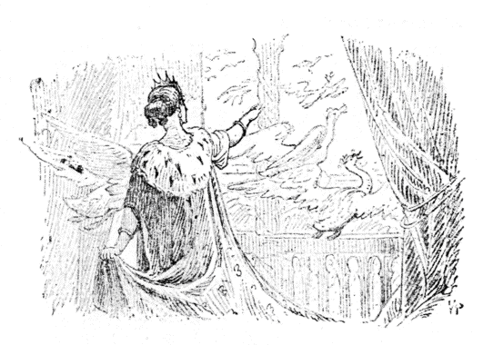
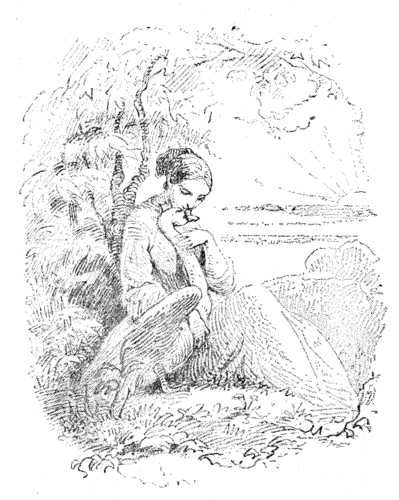
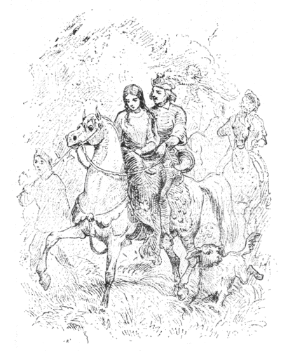
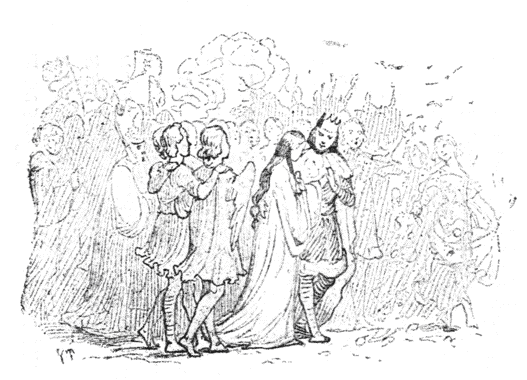

| 野のはくちょう | |
| アンデルセンハンス・クリスチャン | |
| (2012) | |
野のはくちょう
ハンス・クリスティアン・アンデルセン
楠山正雄訳

ここからは、はるかな国、冬がくるとつばめがとんで行くとおい国に、ひとりの王さまがありました。王さまには十一人のむすこと、エリーザというむすめがありました。十一人の男のきょうだいたちは、みんな王子で、胸に星のしるしをつけ、腰に剣をつるして、学校にかよいました。金のせきばんの上に、ダイヤモンドの石筆
で字をかいて、本でよんだことは、そばからあんしょうしました。
この男の子たちが王子だということは、たれにもすぐわかりました。いもうとのエリーザは、鏡ガラスのちいさな腰掛に腰をかけて、ねだんにしたらこの王国の半分ぐらいもねうちのある絵本をみていました。
ああ、このこどもたちはまったくしあわせでした。でもものごとはいつでもおなじようにはいかないものです。
この国のこらずの王さまであったおとうさまは、わるいお妃
と結婚なさいました。このお妃がまるでこどもたちをかわいがらないことは、もうはじめてあったその日からわかりました。ご殿じゅうこぞって、たいそうなお祝の宴会がありました。こどもたちは「お客さまごっこ」をしてあそんでいました。でも、いつもしていたように、こどもたちはお菓子や焼きりんごをたくさんいただくことができませんでした。そのかわりにお茶わんのなかに砂を入れて、それをごちそうにしておあそびといいつけられました。
その次の週には、お妃はちいちゃないもうと姫のエリーザを、いなかへ連れていって、お百姓の夫婦にあずけました。そうしてまもなくお妃はかえって来て、こんどは王子たちのことでいろいろありもしないことを、王さまにいいつけました。王さまも、それでもう王子たちをおかまいにならなくなりました。
「どこの世界へでもとんでいって、おまえたち、じぶんでたべていくがいい。」と、わるいお妃はいいました。「声のでない大きな鳥にでもなって、とんでいっておしまい。」
でも、さすがにお妃ののろったほどのひどいことにも、なりませんでした。王子たちは十一羽のみごとな野の白鳥
になったのです。きみょうななき声をたてて、このはくちょうたちは、ご殿の窓をぬけて、おにわを越して、森を越して、とんでいってしまいました。
さて、夜のすっかり明けきらないまえ、はくちょうたちは、妹のエリーザが、百姓家のへやのなかで眠っているところへ来ました。ここまできて、はくちょうたちは屋根の上をとびまわって、ながい首をまげて、羽根をばたばたやりました。でも、たれもその声をきいたものもなければ、その姿をみたものもありませんでした。はくちょうたちは、しかたがないので、また、どこまでもとんでいきました。上へ上へと、雲のなかまでとんでいきました。とおくとおく、ひろい世界のはてまでもとんでいきました。やがて、海ばたまでずっとつづいている大きなくろい森のなかまでも、はいっていきました。
かわいそうに、ちいさいエリーザは百姓家のひと間
にぽつねんとひとりでいて、ほかになにもおもちゃにするものがありませんでしたから、一枚の青い葉ッぱをおもちゃにしていました。そして、葉のなかに孔
をぽつんとあけて、その孔からお日さまをのぞきました。それはおにいさまたちのすんだきれいな目をみるような気がしました。あたたかいお日さまがほおにあたるたんびに、おにいさまたちがこれまでにしてくれた、のこらずのせっぷんをおもい出しました。
きょうもきのうのように、毎日、毎日、すぎていきました。家のぐるりのいけ垣を吹いて、風がとおっていくとき、風はそっとばら
にむかってささやきました。
「おまえさんたちよりも、もっときれいなものがあるかしら。」
けれどもばら
は首をふって、
「エリーザがいますよ。」とこたえました。
それからこのうちのおばあさんは、日曜日にはエリーザのへやの戸口に立って、さんび歌の本を読みました。そのとき、風は本のページをめくりながら、本にむかって、
「おまえさんたちよりも、もっと信心ぶかいものがあるかしら。」といいました。するとさんび歌の本が、
「エリーザがいますよ。」とこたえました。そうしてばら
の花やさんび歌の本のいったことはほんとうのことでした。
このむすめが十五になったとき、またご殿にかえることになっていました。けれどお妃はエリーザのほんとうにうつくしい姿をみると、もうねたましくも、にくらしくもなりました。いっそおにいさんたち同様、野のはくちょうにかえてしまいたいとおもいました。けれども王さまが王女にあいたいというものですから、さすがにすぐとはそれをすることもできずにいました。
朝早く、お妃
はお湯にはいりにいきます。お湯殿は大理石でできていて、やわらかなしとねと、それこそ目がさめるようにりっぱな敷物がそなえてありました。そのとき、お妃はどこからか三びき、ひきがえるをつかまえてきて、それをだいて、ほおずりしてやりながら、まずはじめのひきがえるにこういいました。
「エリーザがお湯にはいりに来たら、あたまの上にのっておやり。そうすると、あの子はおまえのようなばかになるだろうよ――。」
それから二ひきめのひきがえるにむかって、こういいました。
「あの子のひたいにのっておやり、そうするとあの子は、おまえのようなみっともない顔になって、もう、おとうさまにだって見分けがつかなくなるだろうよ――。」
それから、三びきめのひきがえるにささやきました［＃「ささやきました」は底本では「ささやさました」］
。
「あの子の胸の上にのっておやり。そうすると、あの子にわるい性根
がうつって、そのためくるしいめにあうだろうよ。」
こういって、お妃は、三びきのひきがえるを、きれいなお湯のなかにはなしますと、お湯は、たちまち、どろんとしたみどり色にかわりました。そこでエリーザをよんで、着物をぬがせて、お湯のなかにはいらせました。エリーザがお湯につかりますと、一ぴきのひきがえるは髪の上にのりました。二ひきめのひきがえるはひたいの上にのりました。三びきめのひきがえるは胸の上にのりました。けれどもエリーザはそれに気がつかないようでした。やがて、エリーザがお湯から上がると、すぐあとにまっかなけし
の花が三りん、ぽっかり水の上に浮いていました。このひきがえるどもが、毒虫でなかったなら、そうしてあの魔女の妃がほおずりしておかなかったら、それは赤いばら
の花にかわるところでした。でも、毒があっても、ほおずりしておいても、とにかくひきがえるが花になったのは、むすめのあたまやひたいや胸の上にのったおかげでした。このむすめはあんまり心がよすぎて、罪がなさすぎて、とても魔法の力にはおよばなかったのです。
どこまでもいじのわるいお妃は、それをみると、こんどはエリーザのからだをくるみの汁でこすりました。それはこの王女を土色によごすためでした。そうして顔にいやなにおいのする油をぬって、うつくしい髪の毛も、もじゃもじゃにふりみださせました。これでもう、あのかわいらしいエリーザのおもかげは、どこにもみられなくなりました。
ですから、おとうさまは王女をみると、すっかりおどろいてしまいました。そうして、こんなものはむすめではないといいました。もうたれも見分けるものはありません。知っているのは、裏庭にねている犬と、のきのつばめだけでしたが、これはなんにももののいえない、かわいそうな鳥けものどもでした。
そのとき、かわいそうなエリーザは、泣きながら、のこらずいなくなってしまったおにいさまたちのことをかんがえだしました。みるもいたいたしいようすで、エリーザは、お城から、そっとぬけだしました。野といわず、沢といわず、まる一日あるきつづけて、とうとう、大きな森にでました。じぶんでもどこへ行くつもりなのかわかりません。ただもうがっかりしてつかれきって、おにいさまたちのゆくえを知りたいとばかりおもっていました。きっとおにいさまたちも、じぶんと同様に、どこかの世界にほうりだされてしまったのだろう、どうかしてゆくえをさがして、めぐり逢いたいものだとおもいました。
ほんのしばらくいるうちに、森のなかはもうとっぷり暮れて、夜になりました。まるで道がわからなくなってしまったので、エリーザはやわらかな苔
の上に横になって、晩のお祈をとなえながら、一本の木の株にあたまを寄せかけました。あたりはしんとしずまりかえって、おだやかな空気につつまれていました。草のなかにも草の上にも、なん百とないほたるが、みどり色の火ににた光をぴかぴかさせていました。ちょいとかるく一本の枝に手をさわっても、この夜ひかる虫は、ながれ星のようにばらばらと落ちて来ました。
ひと晩じゅう、エリーザは、おにいさまたちのことを夢にみました。みんなはまだむかしのとおりのこども同士で、金のせきばんの上にダイヤモンドの石筆で字をかいたり、王国の半分もねうちのあるりっぱな絵本をみたりしていました。でも、せきばんの上にかいているものは、いつもの零
や線ではありません。みんながしてきた、りっぱな行いや、みんながみたりおぼえたりしたいろいろのことでした。それから、絵本のなかのものは、なにもかも生きていて、小鳥たちは歌をうたうし、いろんな人が本からぬけてでて来て、エリーザやおにいさまたちと話をしました。でもページをめくるとぬけだしたものは、すぐまたもとへとんでかえっていきますから、こんざつしてさわぐというようなことはありませんでした。
エリーザが目をさましたとき、お日さまは、もうとうに高い空にのぼっていました。でも高い木立
が、あたまの上で枝をいっぱいひろげていましたから、それをみることができませんでした。ただ光が金
の紗
のきれを織るように、上からちらちら落ちて来て、若いみどりの草のにおいがぷんとかおりました。小鳥たちは肩のうえにすれすれにとまるようにしました。水のしゃあしゃあながれる音もきこえました。これはこのへんにたくさんの泉があって、みんな底にきれいな砂のみえているみずうみのなかへながれこんでいくのです。みずうみはふかいやぶにかこまれていましたが、そのうち一箇所に、しか
が大きなではいり口をこしらえました。エリーザはそこからぬけて、みずうみのふちまでいきました。みずうみはほんとうにあかるくきれいにすみきっていて、風がやぶや木の枝をふいてうごかさなければ、そこにうつる影は、まるで、みずうみの底にかいてある絵のようにみえました。
そこには一枚一枚の葉が、それはお日さまが上から照っているときでも、かげになっているときでも、おなじようにはっきりとうつって、すんでみえました。
エリーザは水に顔をうつしてみて、びっくりしました。それは土色をしたみにくい顔でした。でも水で手をぬらして、目やひたいをこすりますと、まっ白なはだがまたかがやきだしました。そこで着物をぬいで、きれいな水のなかにはいっていきました。もうこのむすめよりうつくしい王さまのむすめは、この世界にふたりとはありませんでした。それから、また着物を着て、ながい髪の毛をもとのように編んでから、こんどはそこにふきだしている泉のところへいって、手のひらに水をうけてのみました。それからまた、どこへいくというあてもなしに、森のなかをさらに奥ぶかく、さまよいあるきました。エリーザはなつかしいおにいさまたちのことをかんがえました。けっしておみすてにならない神さまのことをおもいました。ほんとうに神さまは、そこへ野生のりんごの木をならせて、空腹をしのがせてくださいました。神さまはエリーザに、なかでもいっぱいなったりんご［＃「りんご」は底本では「りりんご」］
の実のおもみで、しなっている木をおみせになりました。そこでエリーザはたっぷりおひるをすませて、りんごのしなった枝につっかい棒をかってやりました。それからまた、森のいちばん暗い奥の奥にはいっていきました。それはじつにしずかで、あるいて行くじぶんの足音もきこえるくらいでしたし、足の下で枯れッ葉のかさこそくずれる音もきこえました。一羽の鳥の姿もみえませんでした。ひとすじの日の光も暗い木立のなかからさしこんでは来ませんでした。高い樹の幹が押しあってならんでいて、まえをみると、まるで垣根がいくえにも結ばれているような気がしました。ああ、これこそうまれてまだ知らなかったさびしさでした。
すっかりくらい夜になりました。もう一ぴきのほたるも草のなかに光ってはいませんでした。わびしいおもいでエリーザは横になって眠りました。すると、木木の枝があたまの上で分かれて、そのあいだから、やさしい神さまの目が、空のうえからみておいでになるようにおもいました。そうして、そのおつむりのへんに、またはお腕のあいだから、かわいらしい天使がのぞいているようにおもわれました。
朝になっても、ほんとうに朝になったのか、夢をみているのか、わかりませんでした。エリーザはふた足三足いきますと、むこうからひとりのおばあさんが、かごのなかに木いちごを入れてもってくるのにであいました。
おばあさんは木いちごをふたつ三つだしてくれました。エリーザはおばあさんに、十一人の王子が馬にのって、森のなかを通っていかなかったかとたずねました。
「いいえ。」と、おばあさんがこたえました。「だが、きのう、あたしは十一羽のはくちょうが、めいめいあたまに金のかんむりをのせて、すぐそばの川でおよいでいるところをみましたよ。」
そこで、おばあさんはエリーザをつれて、すこしさきの坂になったところまで案内しました。その坂の下にちいさな川がうねってながれていました。その川のふちには、木立
が長い葉のしげった枝と枝とをおたがいにさしかわしていました。しぜんのままにのびただけでは、葉がまざり合うまでになれないところには、木の根が、地のなかから裂けてでて、枝とをからまり合いながら、水の上にたれていました。
エリーザはおばあさんに「さようなら」をいうと、ながれについて、この川口が広い海へながれ出している所まで下っていきました。
大きなすばらしい海が、むすめの目のまえにあらわれました。けれどひとつの帆もそのおもてにみえてはいませんでした。いっそうの小舟もそのうえにうかんではいませんでした。どうしてそれからさきへすすみましょう。王女は、浜のうえに、数しらずころがっている小石をながめました。水がその小石をどれもまるくすりへらしていました。ガラスでも、鉄くずでも、石でも、そこらにあるものは、王女のやわらかな手よりももっとやわらかな水のために、かたちをかえられていました。
「波はあきずに巻きかえっている。それで堅いものでもいつかすべっこくなる。わたしもそのとおりあきずにいつまでもやりましょう。あとからあとからきれいに寄せてくる波よ。おまえにいいことを教えてもらってよ。なんだかいつか、おまえたちのおかげでおにいさまたちのところへつれて行ってもらえるような気がするわ。」
うちよせられた海草の上に、白いはくちょうの羽根が十一枚のこっていました。それをエリーザは花たばにしてあつめました。その羽根の上には、水のしずくがたれていました。それは露の玉か、涙のしずくかわかりません。浜の上はいかにもさびしいものでした。けれど大海のけしきが、いっときもおなじようでなく、しじゅうそれからそれとかわるので、さほどさびしいともかんじませんでした。それは二三時間のあいだに、おだやかな陸にかこまれた内海が一年かかってするよりも、もっとたくさんの変化をみせました。するうち、まっくろな大きな雲がでて来ました。海も「おれだってむずかしい顔をするぞ。」というようにおもわれました。やがて風が吹きだして、波が白い横腹をうえに向けました。でも雲がまっ赤にかがやきだして、風がぴったりとまると、海はばら
の花びらのようにみえました。それからまた青くなったり白くなったりしました。でもいかほど海がおだやかにないでも、やはり浜辺にはいつもさざなみがゆれていました。海の水はねむっているこどもの胸のように、やさしくふくれあがりました。
お日さまがちょうどしずもうとしたとき、十一羽の野のはくちょうが、めいめいあたまに金のかんむりをのせて、おかのほうへとんでくるところをエリーザはみました。一羽また一羽と、あとからあとから行儀よくつづいてくるのでそれはただひとすじながくしろい帯をひいてとるようにみえました。そのときエリーザは坂にあがって、そっとやぶかげにかくれました。はくちょうたちは、すぐそのそばへおりて来て、大きな白いつばさをばたばたやりました。いよいよお日さまが海のなかにしずんでしまうと、とたんに、はくちょうの羽根がぱったりおちて、十一人のりっぱな王子たちが、エリーザのおにいさまたちが、そこに立ちました。エリーザはおもわず、あッと大きなさけび声をたてました。それはおにいさまたちはずいぶん、せんとかわっていました。けれど、やはりそれにちがいないことが、すぐとわかったからでした。そこでみんなの腕のなかにとびこんでいって、ひとりひとり、名まえをよびました。王子たちは、そうして王女がまたでて来たのをみて、それはもうせいも高くなり、きりょうもずっとうつくしくなってはいましたけれど、じぶんたちのいもうとということがわかって、いいようもなくうれしくおもいました。みんなは泣いたりわらったりしました、そうして、こんどのおかあさまが、きょうだいのこらずに、どんなにひどいことをしたか、おたがいの話でやがてわかりました。

「ぼくたちきょうだいはね、」と、いちばん上のおにいさまがいいました。「みんな、お日さまが空にでているあいだ、はくちょうになってとびまわるが、お日さまがしずむといっしょに、また人間のかたちにかえるのだよ。だから、しじゅう気をつけて、お日さまがしずむころまでには、どこかに、かならず足を休める場所をみつけておかなければならないのさ。それをしないで、うかうか雲のほうへとんで行けば、たちまち人間とかわって、海の底へしずまなければならないのだよ。わたしたちはここに住んでいるのではない。海のむこうに、ここと同様、きれいな国がある。でもそこまでいく道はとても長くて、ひろい海のうえをわたっていかなければならない。その途中には夜をあかす島もない。ただちいさな岩がひとつ海のなかにつきでているだけだ。でもどうやら、そこにはみんながくっつき合ってすわるだけのひろさはある。海が荒れているときには、波がかぶさってくるが、それでも、その岩のあるのがどのくらいありがたいかしれない。そこでぼくたち、夜だけ、人間のかたちになって明かすのだからね。まったくこの岩でもなかったら、ぼくたちは、好きなふるさとへかえることができないだろう。なにしろ、そこまでいくのは一年のなかでもいちばん長い日を、二日分とばなければならないのだからね。一年にたったいっぺん、ふるさとの国をたずねることがゆるされている。そうして、十一日のあいだここにとどまっていて、この大きな森のうえをとびまわる。まあ、この森のうえから、ぼくたちのうまれたおとうさまの御殿もみえるし、おかあさまのうめられていらっしゃるお寺の塔もみえるというわけさ。――だからこのあたりのものは、やぶでも木立
でも、ぼくたちの親類のようにおもわれる。ここでは野馬がこどものじぶんみたとおり草原をはしりまわっている。炭焼までが、ぼくたちがむかし、そのふしにあわせておどったとおりの歌をいまでもうたう。ここにぼくたちのうまれた国があるのだ。どうしてもここへぼくたちは心がひかれるのだ。そうしてここへ来たおかげで、とうとう、かわいいいもうとのおまえをみつけたのだ。もう二日、ぼくたちはここにいることができる。それからまた海をわたってむこうのうつくしい国へいかなければならない。けれどもそこはぼくたちのうまれた国ではないのだ。でもどうしたらおまえをつれていけようね。ぼくたちには船もないし、ボートもないのだからね。」
「どうしたらわたしは、おにいさんたちをたすけて、もとの姿にかえして上けることができるでしょうね。」と、いもうともいいました。こうしてきょうだいは、ひと晩じゅう話をして、ほんの二、三時間うとうとしただけでした。
エリーザはふと、あたまの上ではくちょうの翼がばさばさ鳴る音で目がさめました。きょうだいたちはまた姿を変えられていました。やがてみんなは大きな輪をつくってとんでいきました。けれどもそのなかでひとり、いちばん年下のおにいさまだけが、あとにのこっていました。そのはくちょうは、あたまを、いもうとのひざのうえにのせていました。こうして、まる一日、ふたりはいっしょになっていました。夕方になると、ほかのおにいさまたちがかえって来ました。やがて、お日さまがしずむと、みんなまたあたりまえのすがたにかえりました。
「あしたはここからとんでいって、こんどはまる一年たつまでかえってくることはできない。でもおまえをこのままここへおくことはどうしたってできない。おまえ、わたしたちといっしょに行く勇気があるかい。わたしたち、腕一本でも、おまえをかかえて、この森を越すだけの力はある。だからみんなのつばさを合わせたら、海のうえをはこんでわたれないことはなかろう。」
「ええ、ぜひつれていってください。」と、エリーザはいいました。
そこでひと晩じゅうかかって、みんなしてよくしなうかわやなぎ
の木の皮と、強いあし
とで網を織りました。それは大きくて丈夫にできました。この網のうえにエリーザは横になりました。やがてお日さまがのぼると、おにいさまたちははくちょうのすがたに変って、てんでんくちばしで網のさきをくわえました。そうして、まだすやすやねむっている、かわいいいもうとをのせたまま、雲のうえたかくとんでいきました。ちょうどお日さまの光が顔にあたるものですから、一羽のはくちょうは、いもうとのあたまのうえでとんでやって、その大きなつばさでかげをこしらえてやりました。――
やがてエリーザが目をさましたじぶんには、もうずいぶんとおくへ来ていました。エリーザはまるで夢をみているような気持でした。空を通って、海を越えて、高くはこばれて行くということが、どんなにふしぎにおもわれたことでしょう。すぐそばには、おいしそうにじゅくしたいちごの実をつけたひと枝と、いいかおりのする木の根がひと束
おいてありました。それらはあのいちばん年の若いおにいさまが、取って来てくれたものでした。いもうとはそのおにいさまのはくちょうをみつけて、下からにっこり、うれしそうにわらいかけました。あたまの上をとんで、つばさでかげをつくっていてくれているのも、このおにいさまでした。
もうすいぶん高くとんで、はじめ下でみつけた大きな船は、いつか白いかもめのように、ぼっつり水のうえに浮いていました。ひとかたまりの大きな雲が、すぐうしろにぬっとあらわれましたが、それはどこからみても、ほんとうの山でした。その雲の山に、エリーザはじぶんの影や十一羽のはくちょうの影がうつるのをみました。みんな、それこそ見上げるような大きな鳥になってとんでいました。まったくみたこともないすばらしい影でした。でもお日さまがずんずん高くのぼって、雲がずっとうしろに取りのこされると、その影のようにうかんでいる絵が消えてなくなりました。
まる一日、はくちょうたちは、空のなかを、かぶら矢のようにうなってとびつづけました。
でもなにしろ、いもうとひとりつれているのですから、おくれがちで、いつものようにはとべません。するうち、いやなお天気になって来て、夕暮もせまって来ました。エリーザはしずみかけているお日さまをながめて、まだ海のなかにさびしく立っている岩というのが目にはいらないものですから、心配そうな顔をしていました。はくちょうたちがよけいはげしく羽ばたきしはじめたようにおもわれました。ああ、おにいさまたちみんなが［＃「みんなが」は底本では「みんなか」］
、おもいきって早くとぶこともできないのは、エリーザのためだったのです。やがてお日さまがしずむと、みんなは人間にかえって滝のなかに落ちておぼれなければなりません。そのとき、エリーザはこころの底から、お祈のことばをとなえました。でもまだ岩はみつかりません。まっくろな雲がむくむく近よって来ました。やがてそれは大きなきみわるく黒い雲の山になって、まるで、鉛のかたまりがころがってくるようでした。ぴかりぴかり稲妻
が、しきりなしに光りだして来ました。
いよいよお日さまが海のきわまで落ちかけて来ました。エリーザの胸は、わなわなふるえました。そのときはくちょうたちは、まっしぐらに、まるで、さかさになって落ちくだるいきおいでおりて行きました。はっとおもうとたん、またふと浮きあがりました。お日さまは、半分もう水の下にかくれました。でも、そのときはじめて目の下に小さい岩をみつけました。それはあざらし
というけものはこんなものかとおもわれるほどの大きさで、水のうえにちょっぴり顔をだしていました。お日さまはみるみる沈んでいきました。とうとうそれがほんの星ぐらいにちいさくみえたとき、エリーザの足はしっかりと大地につきました。
お日さまは紙きれが燃えきれて、さいごにのこった火花のようにみえてふと消えてしまいました。おにいさまたちは、手をとりあってエリーザのまわりに立っていました。でも、それだけしか場所はなかったのです。波はたえず岩にぶつかって、しぶきのようにエリーザのあたまにふりそそぎました。空はしっきりなしにあかあかともえる火で光って、ごろごろ、ごろごろ、たえず音がして、かみなりはなりつづきました。でも、きょうだいおたがいにしっかりと手をとりあって、さんび歌をうたいますと、それがなぐさめにもなり、げんきもついて来ました。
明け方のうすあかりでみると、空気はすみきって風もおだやかでした。お日さまがのぼるとすぐ、はくちょうたちはエリーザをつれて、この島をぱっととび立ちました。海はまだすごい波が立っていました。やがて高く舞り上がって、下をみると、紺青
の海のうえに立つ白いあわは、なん百万と知れないはくちょうが、水のうえでおよいでいるようでした。
お日さまがいよいよ高く高くのぼったとき、エリーザは目のまえに、山ばかりの国が半分空のうえに浮いているのをみつけました。その山のいただきには、まっしろに光る氷のかたまりがそびえ、そのまんなかに、なんマイルもあろうとおもわれるお城が立っていて、そのまわりにきらびやかな柱がいくつもいくつもならんでいました。エリーザはこれがみんなのいこうとする国なのかとたずねました。けれどはくちょうたちは首をふりました。なぜというにエリーザの今みたのは、しんきろう
といってりっぱに見えても、それはたえずかわっている雲のお城で、人のいけるところではなかったのです。なるほどエリーザがみつめているうちに、山も林もお城もくずれてしまって、そのかわりに、こんどは、どれもおなじようなりっぱなお寺が、二十も高い塔やとがった窓をならべていました。なんだかそこからオルガンがひびいてくるような気がしましたが、でもそれは海鳴りの音をききちがえたものでした。やがてお寺のすぐそばまでいきますと、みるみるそれは艦隊になって、海をわたっていきました。でもよくながめると、それもただ海の上を霧がはっているだけでした。そんなふうに、しじゅう目のまえにかわったまぼろしを見ながらとんでいくうちに、とうとう目ざすほんものの国をみつけました。そこには、うつくしい青い山がそびえて、すぎ林が茂って、町もあり、お城もありました。お日さまがまだ高いうちに、大きなほら穴のまえの岩のうえにおりました。そこにはやわらかなみどり色のつる草が、縫いとりした壁かけのようにうつくしくからんでいました。
「さあ、ここで、今夜はおまえもどんな夢をみるだろうね。」と、末のおにいさまがいって、いもうとのねべやをみせてくれました。
「どうか、神さまが夢で、どうしたらおにいさまたちをすくって、もとの姿にかえしてあげられるかおしえてくださるといいのですわ――。」と、いもうとはこたえました。
このかんがえが、しっきりなし、エリーザの心にはたらいていました。それでエリーザは神さまのお助けを熱心にいのりました。それはねむっているあいだもいのりつづけました。するうち、エリーザはたかく空のうえに舞い上がって、しんきろうの雲のお城までもとんでいったようにおもいました。すると、うつくしいかがやくような妖女
がひとり、おむかえにでて来ました。ところでその妖女が、あの森のなかでいちごの実をくれて、金のかんむりをあたまにのせたはくちょうの話をしてくれたおばあさんによくにていました。
「おにいさまたちは、もとの姿にもどれるだろうよ。」と、その妖女
はいいました。「でも、おまえさんにそこまでの勇気と辛抱があるかい。ほんとうに、水はおまえのきゃしゃな手よりもやわらかだ。けれどもあのとおり石のかたちを変える。でもそれをするには、おまえさんの指がかんじるような痛みをかんじるわけではない。あれには心がない。おまえさんがこらえなければならないような苦しみをうけることもない。だからおまえさん、そら、あたしが手に持っているイラクサをごらん。こういう草はおまえさんが眠っているほら穴のぐるりにもたくさん生えているのだよ。その草と、お寺の墓地に生えているイラクサだけがいまおまえさんの役に立つのだからね。それは、おまえさんの手をひどく刺して、火ぶくれにするほど痛かろうけれど、がまんして摘みとらなければならないだよ。そのイラクサをおまえさんの足で踏みちぎって、それを麻のかわりにして、それでおまえさんは長いそでのついたくさりかたびらを十一枚編まなければならない。そうしてそれを十一羽のはくちょうに投げかければ、それで魔法はやぶれるのだよ。でもよくおぼえておいでなさい。おまえさんがそのしごとをはじめたときから、それができ上がるまで、それはなん年かかろうとも、そのあいだ、ちっとも口をきいてはならないのですよ。おまえきんの口から出たはじめてのことばが、もうすぐおにいさまたちの胸を短刀のかわりにさすだろう。あの人たちのいのちは、おまえさんの舌しだいなのだ。それをみんなしっかりと心にとめておぼえておいでなさいよ。」
こういって、妖女
はエリーザの手をイラクサでさわりました。それはもえる火のようにあつかったので、エリーザはびくりとして目がさめました。すると、もう、そとはかんかんあかるいまひるでした。ねむっていたすぐそばに、夢のなかでみたとおなじようなイラクサが生えていました。エリーザはひざをついて、神さまにお礼のお祈をしました。それからほら穴をでて、しごとにかかりました。
エリーザはきゃしゃな手で、いやらしいイラクサのなかをさぐりました。草は火のようにあつく、エリーザの腕をも手首をも、やけどするほどひどく刺しました。けれどもそれでおにいさまたちをすくうことができるなら、よろこんで痛みをこらえようとおもいました。それからつみ取ったイラクサをはだしでふみちぎって、みどり色の麻をそれから取りました。
お日さまがしずむと、おにいさまたちはかえって来ました。いもうと［＃「いもうと」は底本では「いもう」］
がおし
になったのをみて、みんなびっくりしました。これもわるいまま母がかわった魔法をかけたのだろうとおもいました。でも、いもうとの手をみて、じぶんたちのためにしてくれているのだとわかると、末のおにいさまは泣きました。このおにいさまの涙のしずくが落ちると、もう痛みがなくなって、手の上のやけどのあとも消えてしまいました。
エリーザは夜もせっせと仕事にかかっていました。もうおにいさまたちをすくいだすまでは、いっときもおちつけないのです。そのあくる日も一日、はくちょうたちがよそへとんで行っているあいだ、エリーザはひとりぼっちのこっていました。けれどこのごろのように時間の早くたつことはありません。もうくさりかたびらは一枚でき上がりました。こんどは二枚目にかかるところです。
そのとき猟
のつの笛が山のなかできこえました。エリーザはおびえてしまいました。そのうちつの笛の音はずんずん近くなって。猟犬のほえる声もきこえました。エリーザはおどおどしながら、ほら穴のなかににげこんで、あつめてとっておいたイラクサをひと束にたばねて、その上に腰をかけていました。
まもなく、大きな犬が一ぴき、やぶのなかからとび出して来ました。それから二ひき、三びきとつづいてとび出して来て、やかましくほえたてました。いったんかけもどってはまたかけ出して来ました。そのすぐあとから、猟のしたくをした武士たちが、のこらずほら穴のまえにいならびました。そのなかでいちばんりっぱなようすをした人が、この国の王さまでした。王さまはエリーザのほうへつかつかとすすんで来ました。王さまはうまれてまだ、こんなうつくしいむすめをみたことがなかったのです。
「かわいらしい子だね。どうしてこんなところへ来ているの。」と、王さまはおたずねになりました。
エリーザは首をふりました。口をきいてはたいへんです。おにいさまたちがすくわれなくなって、おまけにいのちをうしなわなければなりません。そうして、エリーザは両手を前掛の下にかくしました。痛めている手を王さまにみられまいとしたのです。
「わたしといっしょにおいで。」と、王さまはいいました。「おまえはこんなところにいる人ではない。おまえの顔がうつくしいように、心もやさしいむすめだったら、わたしはおまえにびろうどと絹の着物をきせて、金のかんむりをあたまにのせてあげよう。そうして、おまえは世にもりっぱなわたしのお城に住んで、この国の女王になるのだよ。」
こういって、王さまはエリーザを、じぶんの馬のうえにのせました。エリーザは泣いて両手をもみました。けれども王さまはこうおっしゃるだけでした。
「わたしは、ただおまえの幸福をのぞんでいるだけだ。いつかおまえはわたしに礼をいうようになろう。」
それで、じぶんのまえにエリーザをのせたまま、王さまは山のなかを馬でかけていきました。武士たちも、すぐそのあとにつづいてかけていきました。

お日さまがしずんだとき、うつくしい王さまの都が目のまえにあらわれました。お寺や塔がたくさんそこにならんでいました。やがて、王さまはエリーザをつれてお城にかえりました。
そこの高い大理石の大広間には、大きな噴水がふきだしていました。壁と天井
には目のさめるような絵がかざってありました。けれども、エリーザににそんなものは目にはいりませんでした。ただ泣いて、泣いて、せつながってばかりいました。そうしてただ、召使の女たちにされるままに、お妃さまの着る服を着せられ、髪に真珠
の飾をつけて、やけどだらけの指に絹の手袋をはめました。
エリーザがすっかりりっぱにしたくができて、そこにあらわれますと、それは目のくらむようなうつくしさでしたから、お城の役人たちは、ひとしおていねいにあたまをさげました。そこで王さまは、エリーザをお妃
に立てようとしました、そのなかでひとり、この国の坊さまたちのかしらの大僧正
が首をふって、このきれいな森のむすめはきっと魔女で、王さまの目をくらまし、心を迷わせているにちがいないとささやきました。
けれども王さまはそのことばには耳をかしませんでした。もうすぐにおいわいの音楽をはじめよとおいいつけになりました。第一等のりっぱなお料理をこしらえさせて、よりぬきのきれいなむすめたちに踊らせました。そうして、エリーザは、香りの高い花園をぬけて、きらびやかな広間に案内されました。けれどもそのくちびるにも その目にも、ほほえみのかげもありませんでした。ただそこには、まるでかなしみの涙ばかりが、世世にうけついで来たままこりかたまって、いつまでもながくはなれないとでもいうようでした。そのとき王さまは、エリーザを休ませるためことに用意させた、そばのちいさいへやの戸を開きました。このへやは、高価なみどり色のかべかけでかざってあって、しかも今までエリーザのいたほら穴とそっくりおなじような作りでした。ゆかの上にはイラクサから紡
い麻束
がおいてありました。天井
にはしあげのすんだくさりかたびらがぶらさがっていました。これはみんな、武士のひとりが、めずらしがって持ちはこんで来たものでした。
「さあ、これでおまえはもとのすまいにかえった夢でもみるがいい。」と、王さまはおっしゃいました。「ほら、これがおまえのしかけていたしごとだ。そこでいま、このうつくしいりっぱなものずくめのなかにいて、むかしのことをかんがえるのもたのしみであろう。」
エリーザはしじゅう心にかかっている、この品じなをみますと、ついほほえみがくちびるにのぼって来て、赤い血がぽおっとほおを染めました。エリーザはおにいさまたちをすくうことを心におもいながら、王さまの手にくちびるをつけました。王さまはエリーザを胸にだき寄せました。そうして、のこらずのお寺の鐘をならさせて、ご婚礼のお祝のあることを知らせました。森から来たおしのむすめは、こうしてこの国の女王になりました。
そのとき大僧正
は、王さまに不吉
なことばをささやきました。けれどもそれは王さまの心の中へまでははいりませんでした。結婚の式はぶじにあげられることになりました。しかも大僧正みずからの手で金のかんむりをお妃
のあたまにのせなければなりませんでした。いじのわるい、にくみの心で、大僧正はわざとあたまに合わないちいさな輪をむりにはめ込んだので、お妃はひたいがいたんでなりませんでした。でも、それよりももっとおもたい輪がお妃の心にくびり込んではなれません。それはおにいさまたちをいたましくおもう心でした。それにくらべては、からだの痛みなどはまるでかんじないくらいでした。ただひと言、ことばを口にだしても、おにいさまたちの命にかかわることでしたから、くちびるはかたくむすんで、あくまでおし
をつづけました。でもその目は、やさしい、りっぱな王さまをこのましくおもってみていました。王さまは［＃「は」は底本では「ほ」］
エリーザのためには、どんなことでもなさいました。それでエリーザも、一日、一日と、日がたつにしたがって、ありったけの心をかたむけて、王さまをだいじにするようになりました。ああ、それを口にだして王さまにうちあけることができたら、そして心のかなしみをかたることができたら、どんなにうれしいことでしょう。けれどいまは、どこまでもおしでいなければなりません。おしのままでいて、しごとをしあげなければなりません。ですから、夜になると、王さまのおそばからそっとぬけ出して、あのほら穴のようにかざりつけた小べやにはいって、くさりかたびらを、一枚一枚編みました。けれどいよいよ七枚めにかかったとき、麻糸がつきてしまいました。
エリーザは、お寺の墓地へいけば、イラクサの生
えていることを知っていました。けれどそれには、じぶんでいってつんでこなければならないのです。どうしてそこまででていきましょう。
「ああ、わたしの心にいだく苦しみにくらべては、指の痛みぐらいなんだろう。」と、エリーザはおもいました。「わたしはどうしたってそれをしなければならない。そうすれば神さまのおたすけがきっとあるにちがいない。」
それこそまるでなにか悪事でもくわだてているように、胸をふるわせながら、エリーザは月夜の晩、そっとお庭へぬけだして、長い並木道
をとおって、さびしい通をいくつかぬけて、お寺の墓地へでていきました。すると、そこのいちばん大きな墓石の上に、血を吸う女鬼のむれがすわっているのをみつけました。このいやらしい魔物どもは、水でもあびるしたくのように、ぼろぼろの着物をぬいでいました。やがて骨ばった指で、あたらしいお墓にながいつめ
をかけました。そうして餓鬼
のように、死がいのまわりにあつまって、肉をちぎってたべました。エリーザはそのすぐそばをとおっていかなければなりません。すると女鬼どもは、おそろしい目でにらみつけました。けれども心のなかでお祈しながら、エリーザは燃えるイラクサをあつめて、それをもってお城へかえりました。
このときただひとり、エリーザをみていたものがありました。それはれいの大僧正
でした。この坊さんは、ほかのひとたちのねむっているときに、ひとり目をさましているのです。そこで今夜のことをみとどけたうえは、いよいよじぶんのかんがえが正しかったとおもいました。こんなことはお妃
たるもののすべきことではない。女はたしかに魔女だったのだ。だからああして王さまと人民を迷わしたのだと、かんがえました。
お寺の懺悔座
で、大僧正は王さまに、じぶんの見たことと、おもっていることとを話しました。ひどいのろいのことばが、大僧正の口からはきだされると、［＃「、」は底本では「。」］
お寺のなかの昔のお上人
たちの像が首をふりました。それがもし口をきいたら、「そうではないぞ、エリーザに罪はないのだぞ。」と、いいたいところでしたろう。けれども大僧正はそれを、まるでちがったいみにとりました。――あべこべに、それこそエリーザに罪のあるしょうこで、その罪をにくめばこそ、あのとおり首をふっているのだとおもいました。そのとき、ふた粒まで大粒の涙が、王さまのほおをこぼれ落ちました。王さまは、はじめて、うたがいの心をもってお城にかえりました。どうして落ちついてねむるどころではありません。はたしてエリーザがそっと起きあがるところをみつけました。それからは毎晩、おなじことをしました。そのたびにそっと、あとをつけていって、エリーザがれいのほら穴のへやに姿をかくしてしまうところをみとどけました。
日一日と、王さまの顔はくらく、くらくなりました。エリーザはそれをみつけて、それがなぜかわけはわかりませんが、心配でなりませんでした。そのうえ、［＃「、」は底本では「。」］
きょうだいたちのことを心のなかでおもって苦しんでいました。エリーザのあつい涙は、お妃の着るびろうどと紫絹
の服のうえにながれて、ダイヤモンドのようにかがやいてみえました。そのりっぱなよそおいをみるものは、たれもお妃になりたいとうらやみました。そうこうするうちに、エリーザのしごともいつしかあがっていきました。あとたった一枚のくさりかたびらが出来かけのままでいるだけでした。一本のイラクサももうのこっていませんでした。そこでもういちど、行きおさめにお寺の墓地へいって、ほんのひとつかみの草をぬいて［＃「ぬいて」は底本では「ねいて」］
こなければなりません。さすがにエリーザも、ひとりぼっちくらやみのなかをいくことと、あのおそろしい魔物に出あうことをかんがえると、心がおくれました。けれども神さまにたよる信心のかたいように、エリーザの決心はあくまでもかたいものでした。
エリーザはでかけていきました。ところで、王さまと大僧正もそのあとをつけて行きました。ふたりは、エリーザが格子門
をぬけて、墓地のなかへ消えていくところをみました。そばへ寄ってみますと、血を吸う魔物どもが、エリーザが見たとおりに墓石のうえにのっていました。王さまはそのなかまにエリーザがいるようにおもって、ぎょっとしました。ついその夕方までも、そのお妃がじぶんの胸にいたことをおもいだしたからです。
「さばきは人民にまかせよう。」と、王さまはいいました。そこで、人民は、「エリーザを火あぶりの刑に処する。」と、いう宣告を下しました。目のさめるようなりっぱな王宮の広間から、くらい、じめじめした穴蔵のろうや
へエリーザは押し込められました。風は鉄格子の窓からぴゅうぴゅう吹き込みました。今までのびろうどや絹のかわりに、エリーザのあつめたイラクサの束
がほおりこまれました。その上にエリーザはあたまをのせることをゆるされました。エリーザの編んだ、かたいとげで燃えるようなくさりかたびらが、羽根ぶとんと夜着になりました。けれどエリーザにとって、それよりうれしいおくりものはありません。エリーザはまたしごとをつづけながらお祈をしました。そとでは、町の悪太郎どもが、わるくちの歌をうたっていました。たれひとりだって、やさしいことばをかけるものはありませんでした。
ところが、夕方になって、鉄格子のちかくにはくちょうの羽ばたきがきこえました。これはいちばん末のおにいさまでした。おにいさまはいもうとをみつけてくれました。いもうとはうれしまぎれに声をあげて、すすり泣きました。そのくせ、心のなかでは、もうほどなく夜になれば、この世のみおさめだとおもっていました。でも、しごとはもうひといきでしあがります。おにいさまたちはしかもそこへ来ているのです。
大僧正は王さまと約束して、おわりのときまで、エリーザのそばについていることにしました。それで、このときそばへ寄って来て、そのことをいうと、エリーザは首をふって、目つきと身ぶりとで、どうかでていってもらいたいとたのみました。今夜こそしごとをしあげてしまおう。それでなければせっかくいままでにながしたなみだも、苦しみも、ねむらない夜を明かしたことも、みんなむだになってしまうのです。大僧正はいじのわるい、のろいのことばをのこしてでていきました。でもエリーザはじぶんになんの罪もないことを知っていました。そこでかまわずしごとをつづけました。
ちいさなハツカネズミが、ちょろちょろゆかの上をかけまわって、イラクサを足のところまでひいいてきてくれました。エリーザのお手つだいをしてくれるつもりでした。すると、ツグミも窓の格子
の所にとまって、ひとばんじゅう、一生けんめい、おもしろい歌をうたって、気をおとさないようにとはげましてくれました。
まだそとは、夜明けまえのうすあかりでした。もう一時間たたなければ、お日さまはのぼらないでしょう。そのとき、十一人のきょうだいは、お城の門のところへ来て、王さまにお目どおりねがいたいとたのみました。けれどもまだ夜があけないのだから、そんなことはできないといわれました。王さまはねむっていらっしゃる、それをおさまたげしてはならないのだというのです。それでもきょうだいはたのんだり、おどかしたりしました。近衛
の兵隊がでて来ました。いや、そのうちに王さままででておいでになって、どういうわけかとおたずねになりました。するともう、きょうだいたちの姿はみえませんでした。ただ十一羽の野のはくちょうが、お城の上をとびかけって行きました。
人民たちがのこらず町の門にあつまって来て、魔女の焼きころされるところをみようとひしめきあいました。よぼよぼのやせ馬が一頭、罪人ののる馬車をひいてきました。やがてエリーザはそまつな麻の着物を着せられました。あのうつくしい髪の毛は、きれいな首筋にみだれたまま下がっていました。ほおは死人のように青ざめでいました。くちびるはかすかにうごいていました。そのくせ指はまだみどり色の麻をせっせと編んでいました。いよいよ死刑になりにいく道みちも、やりかけたしごとをやめようとはしませんでした。十枚のくさりかたびらは足の下にありました。いま十一枚目をこしらえているところなのです。人民たちはあつまって来て、口ぐちにあざけりました。
「見ろ、魔女がなにかぶつぶついっている。さんびかの本ももっていやしない。どうして、まだいやな魔法をやっているのだ。あんなもの、ばらばらにひき裂いてしまえ。」
こういって、みんなひしひしとそばへ寄って来て、くさりかたびらを引き裂こうとしました。そのとき、十一羽の野のはくちょうがさあッとまいおりました。馬車のうえにとまって、エリーザをかこんで、つばさをばたばたやりました。すると群衆はおどろいてあとへ引きました。
「あれは天のおさとしだ。きっとあの女には罪はないのだ。」と、おおぜいのものがささやきました。けれど、たれもそれを大きな声ではっきりといいきるものはありませんでした。
そのとき、役人が来て、［＃「、」は底本では「。」］
エリーザの手をおさえました。そこで、エリーザはあわてて、十一枚のくさりかたびらをはくちょうたちのうえになげかけました。すると、すぐ十一人のりっぱな王子が、すっとそこに立ちました。けれどいちばん末のおにいさまだけは片手なくって、そのかわりにはくちょうの羽根をつけていました。それはくさりかたびらの片そでが足りなかったからでした。もうひといきで、みんなでき上がらなかったのです。
「さあ、もうものがいえます。」と、エリーザはいいました。「わたくしに罪はございません。」
すると、いま目の前におこった出来事を見た人民たちはとうといお上人さまのまえでするように、いっせいにうやうやしくあたまを下げました。けれどもエリーザは死んだもののようになって、おにいさまたちの腕にたおれかかりました。これまでの張りつめた心と、ながいあいだの苦しみが、ここでいちどにきいて来たのです。
「そうです。エリーザに罪はありません。」と、いちばんうえのおにいさまがいいました。
そこで、このおにいさまは、これまであったことをのこらず話しました。話しているあいだに、なん百万というばら
の花びらがいちどににおいだしたような香りが、ぷんぷん立ちました。仕置柱のまえにつみあげた火あぶりの薪に、一本一本根が生えて、枝がでて、花を咲かせたのでございます。そこには赤いばらの花をいっぱいつけた生垣が、高く大きくゆいまわされて、そのいちばんうえに、星のようにかがやく白い花が一りん吹いていました。その花を王さまはつみとって、エリーザの胸にのせました。するとエリーザはふと目をさまして、心のなかは平和と幸福とでいっぱいになりました。
そのとき、のこらずのお寺の鐘がひとりでに鳴りだしました。小鳥たちがたくさんかたまってとんで来ました。それから、それはどんな王さまもついみたこともないようなさかんなお祝の行列が、お城にむかって練
っていきました。

底本：「新訳アンデルセン童話集第一巻」同和春秋社
１９５５（昭和30
）年7
月20
日初版発行
※「旧字、旧仮名で書かれた作品を、現代表記にあらためる際の作業指針」に基づいて、底本の表記をあらためました。
入力：大久保ゆう
校正：秋鹿
２００６年1
月18
日作成
青空文庫作成ファイル：
このファイルは、インターネットの図書館、青空文庫（http://www.aozora.gr.jp/）で作られました。入力、校正、制作にあたったのは、ボランティアの皆さんです。